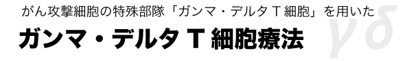
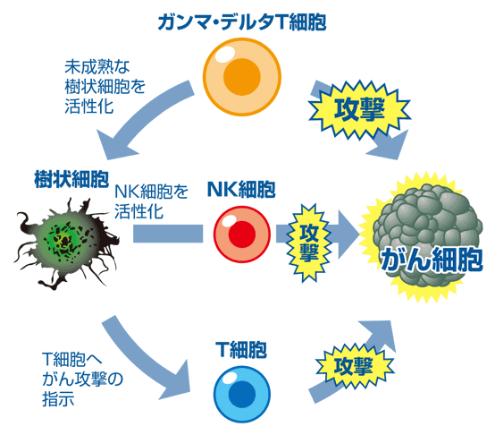
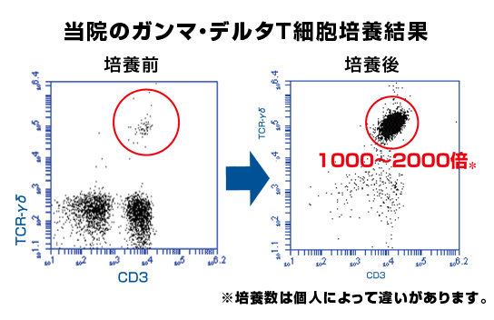
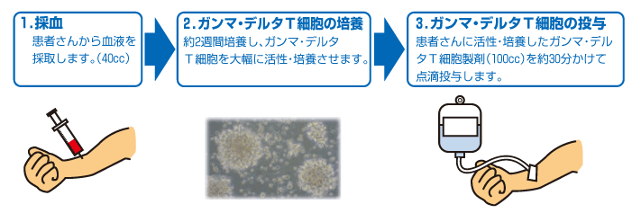
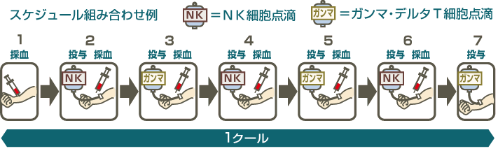

简体中文
简体中文



ガンマ・デルタT細胞療法とは大学病院や大規模医療機関にて研究・治験が進められており、NK細胞と同じリンパ球の仲間で、がん細胞を直接攻撃する事の出来る細胞を用いた治療です。
ガンマ・デルタT細胞はNK細胞やキラーT細胞（CTL）とは異なるがん細胞の認識方法の為、活性NK細胞療法などの他の免疫療法と併用とすることで、より高い相乗効果が望めます。
ガンマ・デルタT細胞はNK細胞やキラーT細胞（CTL）とは異なるがん細胞の認識方法の為、活性NK細胞療法などの他の免疫療法と併用とすることで、より高い相乗効果が望めます。

ガンマ・デルタT（γδT）細胞とは
ガンマ・デルタT細胞は、リンパ球中に通常1～5％ほどしか存在しないごく少量の細胞です。一般的に言われるT細胞とは異なった希少な細胞です。
ガンマ・デルタT細胞は多彩な受容体を持っており、がん細胞表面に（比較的共通して）発現する様々な分子を認識する事で、樹状細胞などの抗原提示細胞の介入なしにがん細胞を攻撃する事が可能です。
当院の治療では、このガンマ・デルタT細胞を約1000倍～2000倍まで増殖し活性化をさせます。
当院のガンマ・デルタT細胞は細胞表面上にFcレセプターというものを有しており、抗体依存性細胞傷害（ADCC）により、抗体と結合した標的細胞を攻撃するという特徴があります。これは抗がん剤として用いられる抗体医薬（ハーセプチンなどの抗がん剤）などと組み合わせる事で、よりガンマ・デルタT細胞のがん細胞を殺傷する能力が高められるということです。
ガンマ・デルタT細胞は多彩な受容体を持っており、がん細胞表面に（比較的共通して）発現する様々な分子を認識する事で、樹状細胞などの抗原提示細胞の介入なしにがん細胞を攻撃する事が可能です。
当院の治療では、このガンマ・デルタT細胞を約1000倍～2000倍まで増殖し活性化をさせます。
当院のガンマ・デルタT細胞は細胞表面上にFcレセプターというものを有しており、抗体依存性細胞傷害（ADCC）により、抗体と結合した標的細胞を攻撃するという特徴があります。これは抗がん剤として用いられる抗体医薬（ハーセプチンなどの抗がん剤）などと組み合わせる事で、よりガンマ・デルタT細胞のがん細胞を殺傷する能力が高められるということです。

ガンマ・デルタT細胞療法の流れ
当院のガンマ・デルタT細胞療法は活性NK細胞療法と同様に患者さんから末梢血を40cc採取させていただき約2週間、培養センターにて増殖・活性化を行って点滴を作成し、生理食塩液と共に30分ほどかけ体内にお戻しする治療です。
患者さんより頂いた細胞を増殖・活性化をして投与するため、稀に発熱する事がありますが、一過性のもので心配ございません。
患者さんより頂いた細胞を増殖・活性化をして投与するため、稀に発熱する事がありますが、一過性のもので心配ございません。

ガンマ・デルタT細胞療法の併用
基本、ガンマ・デルタT細胞療法は活性NK細胞療法を中心とした併用療法です。
単独での治療は行いません。
ガンマ・デルタT細胞はNK細胞などの他の免疫細胞とは異なるがん細胞の認識方法である為、併用する事でより多くのがん細胞を攻撃する事が可能です。
また未成熟な樹状細胞を活性化させる働きも備えているなど、身体全体の免疫バランスを整える効果も持ち合わせているので様々な治療と併用する事が望ましいとされています。
単独での治療は行いません。
ガンマ・デルタT細胞はNK細胞などの他の免疫細胞とは異なるがん細胞の認識方法である為、併用する事でより多くのがん細胞を攻撃する事が可能です。
また未成熟な樹状細胞を活性化させる働きも備えているなど、身体全体の免疫バランスを整える効果も持ち合わせているので様々な治療と併用する事が望ましいとされています。

ガンマ・デルタT細胞療法の副作用
個人差はありますが、稀に発熱することがあります。
1回目の投与で出なくても何度目かの投与で出る場合もあります。